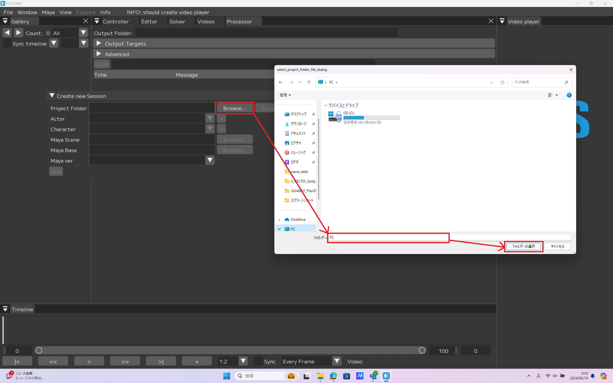
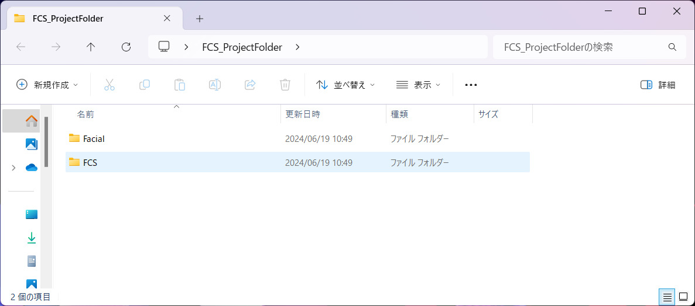
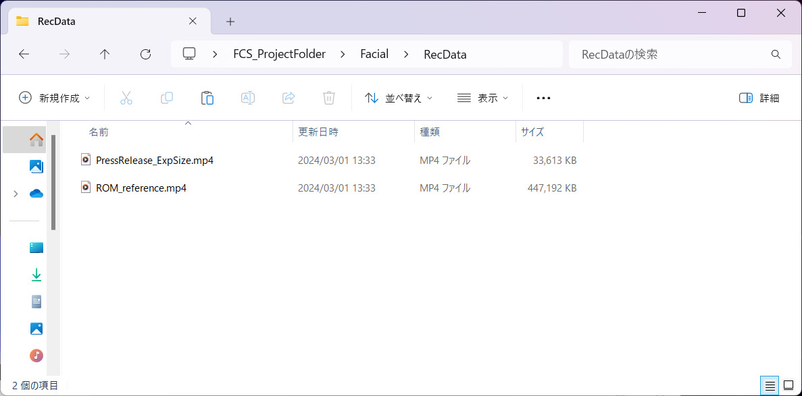
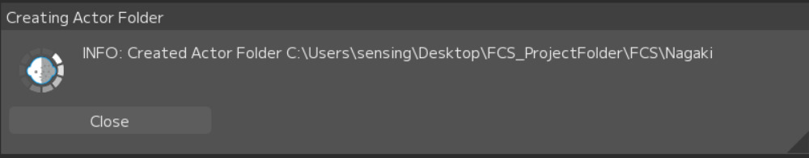
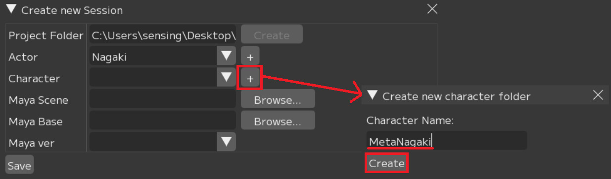
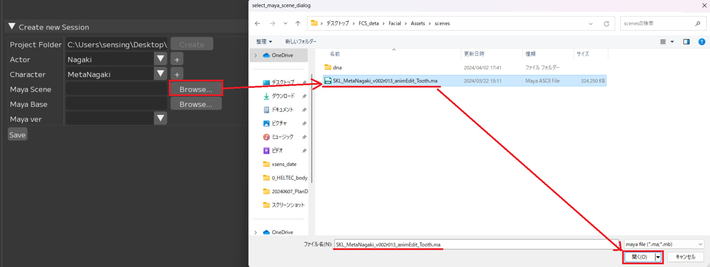
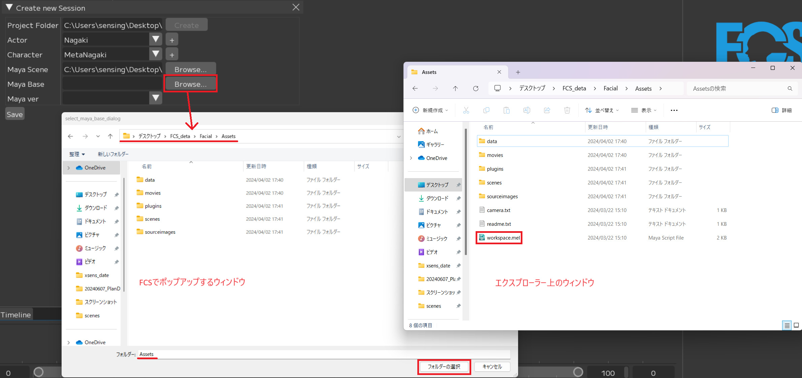

Session作成もしくはオープン
FCSではアクター情報、キャラクター情報、Mayaシーン情報とその解析データを紐づけたファイルのことを「Session」と呼びます。
FCS起動後、Sessionデータへアクセスするため 「New...（新規作成）」または「Open（開く）」を実行します。
Note
初めにSessionに関わる設定を行うことで、Mayaを別途操作することなくFCS上のボタンでスムーズに作業を開始することができます。
Create new Sessionで作成されるフォルダ構造
色 |
内容 |
|---|---|
赤枠 |
Project Folderで作成されるフォルダ |
青枠 |
Actorで作成されるフォルダ |
緑枠 |
Characterで作成されるフォルダ |

フォルダ |
内容 |
説明 |
|---|---|---|
Facial |
動画やMayaシーンデータ等素材を保存する場所 |
|
L |
Assets |
Mayaのプロジェクトファイル（Assets以下）を保存する場所 |
L |
RecData |
ROM体操やFCSで解析したい動画を保存する場所 |
L |
Scene |
アニメーション出力時のデフォルト出力先 |
L |
SetData |
アニメーション出力で「audio」を選択した場合にはwavファイルが、「Frame」「Landmark Frame」を選択した場合は連番画像が作成され、保存される |
FCS |
解析に使用するデータが保存されるプロジェクトフォルダ |
|
L |
Assets |
Actorで作成したフォルダ。Actorで入力した名前が表記される |
L |
RecData |
Characterで作成したフォルダ。Characterで入力した名前が表記される |
L |
Scene |
作成したProfileの編集データ（画像や数値情報）が保存される |
L |
SetData |
解析する動画のキャッシュが保存される |
L |
.lock |
競合を防ぐためのロックファイル。起動時/終了時に自動で作成/消去される |
L |
fcs_session.yaml |
Session情報を保存しているファイル |
Sessionの新規作成
File → Session→New...を選択
{kind=link}
{kind=link}
フォルダ |
説明 |
|---|---|
Project Folder |
FCSの作業データを置きたい場所を指定 |
Actor |
モーションキャプチャアクター名 |
Character |
3Dモデルのキャラクター名 |
Maya Scene |
3DモデルのMayaシーンへのパス |
Maya Base |
Assets、workspace.melがあるフォルダへのパス |
Maya Ver |
3Dモデルを作成したMayaのバージョンを指定 |
Project Folderの設定
Browseボタンをクリックし、Project Folderを指定するためウィンドウを起動します。
 FCSのデータを保存したい任意のフォルダを選択
Project Folderを作成します。

Create
問題なく作成できたらポップアップが表示されます。

Close
エクスプローラーで「Facial」「FCS」のフォルダが作成されます。
 Note
Project Folder作成後、Project Folder→Facial→Assetsフォルダに紐付けるMayaシーンをProject Folder→Facial→Recdataフォルダに解析したい動画を移動しておくことを推奨します。
※別の場所に保存していてもアクセスできます。
Example assets folder
 Example RecData folder
Actorの設定
「+」ボタンをクリックし、ActorFolderを作成するための 「Create new actor folder」ウィンドウを起動します。
「Actor Name」に登録したい名前を入力
「Actor」＝モーションキャプチャアクター名
Create

問題なく作成できたらポップアップが表示されます。
close
 エクスプローラーでProject Folderフォルダ直下に入力したActerフォルダが作成されます。

Characterの設定
「+」ボタンをクリックし、characterFolderを作成するための「Create new character Folder」ウィンドウを起動します。
「Character Name」の入力欄に登録したい名前を入力
Create
 エクスプローラーでActorフォルダ直下に入力したCharacterフォルダが作成されます。

MayaSceneの設定
Browseボタンをクリックし、MayaSceneを指定するためウィンドウを起動します。
MayaSceneデータのパスを指定
 MayaBaseの設定
Browseボタンをクリックし、MayaBaseを指定するためウィンドウを起動します。
workspace.melがある場所(Mayaシーンのプロジェクト設定で登録している場所)を指定
Attention
FCS上でポップアップするウィンドウにはworkspace.melが表示されません
 MayaVerの設定

Sceneを作成したMayaのバージョンを指定
全て入力を終えたらSaveボタンを押してください。

Save

エクスプローラーでcharacterフォルダ直下にfcs_session.yaml(FCSファイル)が作成されます。
Note
.lockファイルは 作業中にほかの人からのアクセスを防ぐためのものです。
正常に終了した際には自動で削除されます。Note
不正に終了するなどして.lockファイルが残ってしまった場合、
FCSの起動時にポップアップから削除するか、
.lockファイルをエクスプローラーで直接削除してください。
{kind=link}
{kind=link}
{kind=link}
{kind=link}
{kind=link}
{kind=link}
{kind=link}
既にSessionが作成されている場合
履歴またはfcs_session.yamlファイルからSessionを開いてください。
履歴から開く場合
以前にSessionを起動している場合、File→Session→Openの下に履歴が表示されます。
作業したいデータをクリック

fcs_session.yamlファイルから開く場合
File→Session→Open→Open...
OpenSessionウィンドウが開かれたらローカルとネットワークドライブが表示されます。Characterフォルダ直下にあるfcs_session.yamlファイルを選択し、開く
{kind=link}
Seesionを開く際の注意
Sessionの同時起動について
Warning
Sessionの新規作成/Open後、続けて別のSession作成や起動は出来ません。
別のSessionを開きたい場合は、現在のSessionを終了し、FCSの再起動後開きなおしてください。
「Maya Verの設定」をしても反映されない場合
Session作成時に設定した項目は File→Session→info で確認することができます。

New Sessionで設定したMayaVerがinfoで反映されていない場合は、info画面のMaya Versionを右クリックし、Editから変更ができます。


Attention
設定の変更後は必ずSaveボタンを押してください